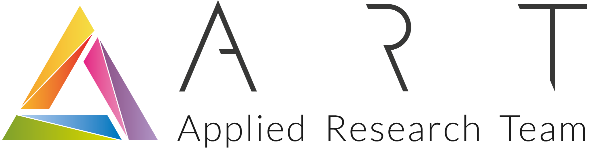

Cifris Cloud Meeting
CIFRIS24 affiliated event - Rome 27-09-2024
Banca d'Italia, "Centro Donato Menichella",
Largo Guido Carli 1, Frascati (Rome)
CIFRIS24 affiliated event - Rome 27-09-2024
Banca d'Italia, "Centro Donato Menichella",
Largo Guido Carli 1, Frascati (Rome)
Explore the latest advancements in privacy enhancing techniques specifically designed for cloud computing, an affiliated event with CIFRIS24 organised by Michela Iezzi (Bank of Italy), Matteo Nardelli (Bank of Italy) and Marco Pedicini (Roma Tre University).

| 27 September 2024 - Workshop Session - Room D | |
| 11h40 - 12h20 - Martina Palmucci, NTT-Data, Rome Keynote: ANTI-fraud: ABE Solutions | |
| 12h20 - 12h40 - Roberto La Scala, University of Bari Title: Functional encryption and multivariate cryptography | |
| 12h40 - 13h00 - Daniele Friolo, Sapienza University of Rome Title: Registered (Inner-Product) Functional Encryption |
The recent advent of wearable devices, Internet of Things, smartphones, and, in general, the pervasive diffusions of sensors and actuators, is constantly calling for decentralizing the key benefits of cloud computing towards the “edges” of the network. Therefore, the emerging computing environment encompasses different computing and storage devices that can exchange (also sensitive) information at an unprecedented pace.
Since data can be shared, offloaded, or transferred among (edge and) cloud computing devices, there is an urgent need to protect them against interception and tampering. Defending against attacks that exploit information leakage from physical implementation (e.g., timing attacks, power analysis attacks) also requires careful cryptographic design and implementation. The situation is exacerbated by the presence of a great plethora of different devices that can access data at the edge of the network.
We focus on cryptography designed to protect cloud computing, a non-exhaustive list of topics includes: Data privacy and confidentiality in the edge and cloud computing (at rest, in transit, in use - homomorphic encryption); Secure data sharing and collaboration in the cloud (access control, multi-user encryption, secure multi-party computation); Advanced cryptographic techniques (e.g., homomorphic encryption, attribute-based encryption, quantum-safe encryption) ; Federated Learning; Synthetic financial data generation; Techniques for verifiable computation in cloud computing (e.g., Zero-Knowledge Proofs); Multi-tenancy and data isolation; Performance modelling and benchmarking; Tools and technologies for enhancing cloud cryptography; Key management in cloud computing (generation, distribution, storage, rotation, revocation); Threats, attacks, and defense against them ; Case studies and real-world implementations; Legal aspects of cloud cryptography; Emerging trends and future directions in cloud cryptography.
To register follow instructions to register to the main conference.
Contact person: Prof. Marco Pedicini
Department of Mathematics and Physics, Roma Tre University, Rome, Italy
Email: marco.pedicini@uniroma3.it